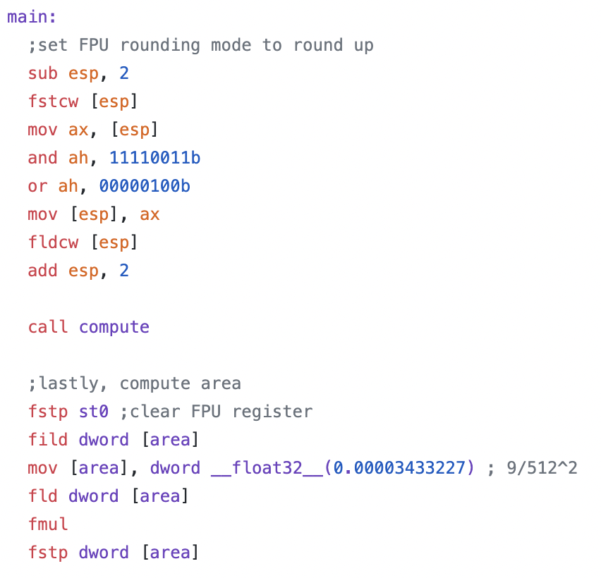

Deep Molecular Solubility An open source repository that uses deep graph neural networks to predict the solubility of a target drug from its structure.
I implemented the model in PyTorch and PyTorch Geometric, and trained it on solubility data gathered from the
Harvard AqSolDB dataset.
I also wrote a Medium article explaining the details of the software in an approachable manner, for anyone that is interested!
TensorFlow-Autopilot A popular open source repository that implements a
paper by Nvidia
in TensorFlow to create baseline self-driving car. I wrote code to read and decode my car's CAN-BUS data
and collect labeled image data to be used to train a machine learning model. The repository has been
featured and cited in numerous websites and papers, and appears from time to time in lectures
and courses. Read more about it in my
Medium article,
which was published in Towards Data Science!
Automated Test Grader
An automatic computer vision-based system which detects exams in images and grades multiple choice tests in real time.
Detects key points on a premade-exam sheet, computes projection, then uses CV algorithms to detect bubbled answers. Written in Python and open
source on GitHub.
Acai
A drag and drop GUI for auto-generating Keras code in Python using visual directed graphs as model representations.
Handles splits, concatenations, time-dependency, multiple inputs/outputs with ease, generating test code and model code.
Separate versions written in C++/SFML, HTML + JavaScript for high portability.

x86 Mandelbrot Computation This is a simple program that computes the area of the Mandelbrot set
written entirely in x86 assembly code. This project was meant as a portfolio piece to demonstrate basic competency in assembly,
but feel free to check it out anyway!
Chai
A minimal open source modular C++ neural network library coded from scratch with included MNIST example code.
Modular neural network code written efficiently, meant as a showcase of C++ proficiency, as well as a teaching exercise for deep learning beginners!
A good example of an implementation of back-propagation and stochastic gradient descent.
 Deep Molecular Solubility
Deep Molecular Solubility